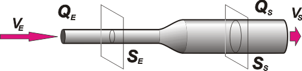

NO ME SALEN
(PROBLEMAS RESUELTOS DE BIOFÍSICA DEL CBC)
FLUIDOS
HIDRODINÁMICA
|
|

|
| |

|
16) A non-viscous fluid flows through a horizontal pipe of varying cross-sectional area. Find the pressure variation between the pipe´s extremes in function of the entry velocity, v, and the density , ρ, if:
a) The exit area of the pipe is triple the entry’s area
b) The exit diameter is triple the entry´s diameter |
Here another classic problem of energy conservation in a fluid (Bernoulli). Let´s go with the first part in which the exit area is triple the entry´s. |
|
|
 |
|
|
Written as an equation, the condition of this problem says:
SS = 3 SE
That has its consequence in the velocity, and in the velocity squared, given that:
QS = QE
SS . vS = SE . vE
3 SE . vS = SE . vE
3 vS = vE
And the squares:
9 vS² = vE²
vS² = vE² / 9
Now we can write Bernoulli´s equation (without the terms of potential energy, as everything happens at an equal height) to calculate the pressure variation, ΔP.
ΔP = ½ ρ (vE² – vS²)
ΔP = ½ ρ (vE² – vE²/ 9) = ½ ρ (8/9) vE²
|
|
|
|
|
|
The new condition of this problem relates the pipes´ diameters, not their sections:
dS = 3 dE
dS² = 9 dE²
Yet, we can relate all the sections, remember that a circular section is equal to S = (π/4) d²
(π/4) dS² = 9 (π/4) dE²
SS = 9 SE
This has a consequence in the velocity and in the velocity squared, as:
QS = QE
SS . vS = SE . vE
9 SE . vS = SE . vE
9 vS = vE
81 vS² = vE²
vS² = vE² / 81
Now we write Bernoulli’s equation:
ΔP = ½ ρ (vE² – vS²)
ΔP = ½ ρ (vE² – vE²/ 81 ) = ½ ρ (80/81) vE²
|
|

|
|
|
|
In both cases we face a pressure rise, owning to the fact that at the exit the velocity is less than at the entrance, and at an equal height, higher pressure regions have lower fluid speed. |
|
|
CHALLENGE: What would be the pressure variation if the density of the fluid was 1.200 kg/m3 and the entry velocity 0,082 m/s? |
|

|
| |
|
Algunos derechos reservados.
Se permite su reproducción citando la fuente. Traducción gentileza de Celina Nassello. Última actualización abr-08. Buenos Aires, Argentina.
|
|
| | |
|
|